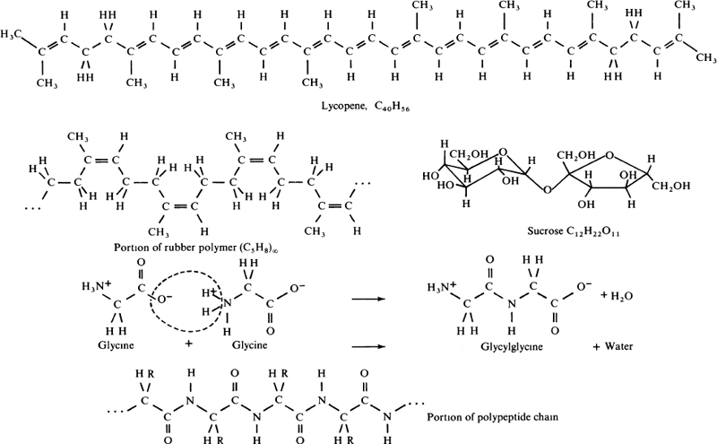
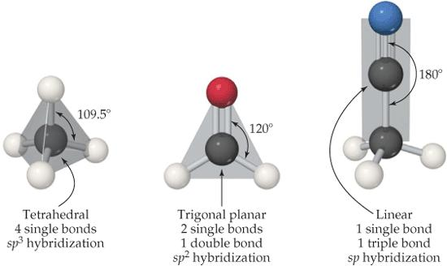
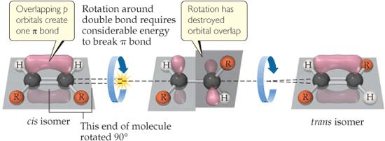
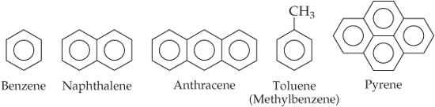
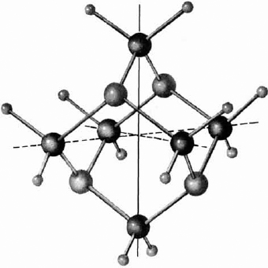
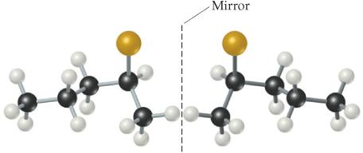

Química orgánica: la química de los compuestos del carbono
Introducción
Se conocen más de dieciséis millones de compuestos que contienen carbono, y cerca del noventa por ciento de las sustancias nuevas que los químicos preparan cada año lo incluyen (Brown et al. 2012, cap. 24). El estudio de los compuestos cuyas moléculas contienen carbono constituye la química orgánica, una rama cuyo mismo nombre proviene de la creencia del siglo dieciocho de que tales sustancias solo podían formarse en los sistemas vivos (Brown et al. 2012, cap. 24).
Esa creencia cayó en 1828, cuando el químico alemán Friedrich Wöhler sintetizó la urea, H₂NCONH₂, calentando cianato de amonio, NH₄OCN, una sustancia inorgánica (Brown et al. 2012, cap. 24). El episodio no desmanteló el vitalismo de inmediato, pero abrió la puerta a una química del carbono domesticada en el laboratorio y a la convicción de que estos compuestos obedecen las mismas leyes de combinación que el resto de la materia (Brock 2015, cap. 4).
Este capítulo organiza esa química en cuatro ejes: las geometrías del carbono, la familia de los hidrocarburos con sus reacciones características, los grupos funcionales con oxígeno y nitrógeno, y la quiralidad molecular (Brown et al. 2012, cap. 24). Sobre esos ejes se apoyan los polímeros sintéticos y, en el próximo capítulo, las moléculas de la vida, por lo que conviene fijar aquí cada concepto con su definición (Pauling 1988, cap. 23).
De la fuerza vital a la química del carbono
Antoine-François de Fourcroy, discípulo de Lavoisier, dividió la química en inorgánica y orgánica, asignando a la segunda las sustancias extraídas de los seres vivos, y esa distinción gobernó la disciplina hasta la década de 1830 (Brock 2015, cap. 4). En 1858, August Kekulé la redefinió desde un criterio más fértil: la química orgánica es la química de los compuestos del carbono, fueran de origen biológico o de laboratorio (Brock 2015, cap. 4).
La teoría estructural asociada a Aleksandr Butlerov completó la revolución conceptual: las propiedades de un compuesto dependen del arreglo de sus átomos y no solo de su fórmula, de modo que dos moléculas con la misma composición pueden ser sustancias distintas (Brock 2015, cap. 4). Esos compuestos, los isómeros, impusieron la costumbre de escribir estructuras y no solo fórmulas, costumbre que permanece en la química orgánica actual (Brock 2015, cap. 4).
La historia dejó además una tercera pista: en 1848 Louis Pasteur separó cristales que hacían girar el plano de la luz polarizada en direcciones opuestas, y en 1874 Jacobus van ’t Hoff propuso que las cuatro valencias del carbono se dirigen a los vértices de un tetraedro (Brock 2015, cap. 4). De esa geometría se sigue que existen pares de moléculas que son imágenes especulares no superponibles, anticipo de la quiralidad que el capítulo abordará al final (Brock 2015, cap. 4).
El carbono: cuatro enlaces y tres geometrías
El carbono posee cuatro electrones de valencia, con configuración [He]2s²2p², y forma cuatro enlaces en prácticamente todos sus compuestos (Brown et al. 2012, sec. 24.1). Cuando los cuatro enlaces son simples, los pares electrónicos se disponen tetraédricamente y los orbitales del carbono se describen como sp³; con un doble enlace la geometría es trigonal plana, sp², y con un triple enlace, lineal, sp (Brown et al. 2012, sec. 24.1).
Las fórmulas estructurales de la Figura Figura 24.1 resumen ese repertorio: las moléculas orgánicas se representan como cadenas de carbonos con sus hidrógenos, dejando visible cada enlace (Pauling 1988, fig. 23–1). Por eso la química orgánica construye sus imágenes sobre el esqueleto carbono-carbono más que sobre la fórmula global (Pauling 1988, fig. 23–1).

La Figura Figura 24.2 muestra las tres disposiciones: tetraédrica en el metano, CH₄, trigonal plana en el metanal, CH₂O, y lineal en el acetonitrilo, CH₃CN (Brown et al. 2012, fig. 24.1). En todos los casos cada carbono conserva sus cuatro enlaces, condición insoslayable que el estudiante debe verificar en cualquier estructura orgánica (Brown et al. 2012, fig. 24.1).

Los enlaces carbono-carbono y carbono-hidrógeno poseen baja polaridad, por lo que la mayoría de las moléculas orgánicas son poco polares y se disuelven mejor en disolventes no polares que en agua (Brown et al. 2012, sec. 24.1). La solubilidad cambia cuando en la superficie de la molécula asoman grupos polares, como ocurre en la glucosa o el ácido ascórbico, que por esa razón sí se disuelven en medios polares (Brown et al. 2012, sec. 24.1).
Una molécula con una larga porción no polar unida a una parte polar iónica actúa como surfactante: la cola se extiende hacia la grasa, la cabeza hacia el agua, y por eso sustancias como el ion estearato son la base de jabones y detergentes (Brown et al. 2012, sec. 24.1). Esta doble afinidad anticipa el papel de los grupos funcionales en la solubilidad, que el capítulo retomará con los jabones (Brown et al. 2012, sec. 24.1).
El grupo funcional: centro de la reactividad
El grupo funcional es el átomo o conjunto de átomos que confiere a una molécula sus reacciones características, y un mismo grupo tiende a comportarse igual en moléculas de cualquier tamaño (Brown et al. 2012, sec. 24.4). La química de una molécula orgánica queda así determinada, en buena medida, por los grupos funcionales que contiene y no por la longitud de su cadena (Brown et al. 2012, sec. 24.4).
Con la excepción de los enlaces C═C y C≡C, todos los grupos funcionales comunes contienen oxígeno, nitrógeno o un halógeno, X (Brown et al. 2012, sec. 24.4). El inventario habitual incluye, junto a alquenos y alquinos, los alcoholes, éteres, aldehídos, cetonas, ácidos carboxílicos, ésteres, aminas y amidas, cada uno con su reactividad propia (Brown et al. 2012, sec. 24.4).
Las porciones restantes de la molécula suelen ser grupos alquilo, fragmentos de enlaces C─C y C─H poco reactivos que los químicos simbolizan con la letra R: los alcanos son R─H, los alcoholes R─OH, y cuando intervienen varios grupos distintos se escriben R, R’ y R’’ (Brown et al. 2012, sec. 24.4). Esa notación permite describir una familia entera de compuestos con una sola fórmula general (Brown et al. 2012, sec. 24.4).
En la práctica, las reacciones se entienden como intercambios de parejas atómicas entre reactivos (Atkins 2015, cap. 4). Si una región de la molécula tiene una nube electrónica delgada, un reactivo negativo se acerca por atracción nuclear y ocurre una sustitución nucleófila; si la nube es densa, un reactivo positivo realiza una sustitución electrófila, y a veces conviene proteger regiones sensibles con grupos temporales que luego se retiran (Atkins 2015, cap. 4).
Alcanos y cicloalcanos: el esqueleto saturado
Los hidrocarburos saturados, llamados alcanos, contienen solo enlaces simples carbono-carbono y por ello el máximo número posible de hidrógenos por carbono (Brown et al. 2012, secs. 24.2, 24.3). Cada carbono presenta geometría tetraédrica sp³, y la serie comienza con el metano, CH₄, el etano, C₂H₆, y el propano, C₃H₈ (Brown et al. 2012, sec. 24.2). En conjunto son menos reactivos que las moléculas con enlaces múltiples, y su química gira en torno a la combustión y a la sustitución controlada (Brown et al. 2012, secs. 24.2, 24.3).
Para escribirlos se usan fórmulas condensadas, notación que revela cómo se unen los átomos sin dibujar todos los enlaces: el butano, C₄H₁₀, se escribe CH₃CH₂CH₂CH₃ (Brown et al. 2012, sec. 24.2). El ahorro de trazos es considerable, y basta para leer la conectividad de la molécula (Brown et al. 2012, sec. 24.2).
La rotación en torno a un enlace simple carbono-carbono es fácil y rápida a temperatura ambiente, de modo que una cadena larga cambia constantemente de forma, como una cadena que se agita (Brown et al. 2012, sec. 24.2). La flexibilidad de esas cadenas es un rasgo estructural que la sección de alquenos contrastará con la rigidez del doble enlace (Brown et al. 2012, sec. 24.2).
Compuestos con la misma fórmula molecular pero distinto arreglo de enlaces son isómeros estructurales: el butano, C₄H₁₀, tiene dos, y el pentano, C₅H₁₂, tres, y cada isómero muestra puntos de fusión y ebullición propios (Brown et al. 2012, sec. 24.2). El número crece con rapidez: existen dieciocho isómeros con fórmula C₈H₁₈ y setenta y cinco con C₁₀H₂₂ (Brown et al. 2012, sec. 24.2).
La nomenclatura sistemática nació en el congreso internacional de Ginebra de 1892 y hoy la gobierna la IUPAC: cada nombre tiene tres partes, prefijo que señala los sustituyentes, cadena principal y terminación que indica la familia (Brown et al. 2012, sec. 24.2). Los nombres comunes recurren a los prefijos n-, iso- y neo- para las ramificaciones sencillas, aunque pierden poder a medida que los isómeros se multiplican (Brown et al. 2012, sec. 24.2).
Los cicloalcanos son alcanos cuyos carbonos forman anillos, y suelen dibujarse como estructuras de líneas en las que cada vértice representa un grupo CH₂ (Brown et al. 2012, sec. 24.2). La convención recuerda la de los anillos aromáticos, con la diferencia de que allí cada vértice es un CH, detalle que conviene no confundir (Brown et al. 2012, sec. 24.2).
La reacción comercial más importante de los alcanos es la combustión, que los convierte en dióxido de carbono y agua con liberación de calor, y por ella los alcanos del petróleo y del gas natural sirven de combustible (Brown et al. 2012, sec. 24.2). La ecuación para el etano, el segundo miembro de la serie homóloga, fija la proporción exacta entre combustible, comburente y productos, proporción que gobierna el diseño de cualquier quemador (Ecuación Ecuación 24.1) (Brown et al. 2012, sec. 24.2).
\[ 2\,\mathrm{C_2H_6}(g) + 7\,\mathrm{O_2}(g) \rightarrow 4\,\mathrm{CO_2}(g) + 6\,\mathrm{H_2O}(l),\qquad \Delta H^\circ = -2855\ \mathrm{kJ} \tag{24.1}\]
En el balance anterior, dos moles de etano exigen siete moles de oxígeno y producen cuatro de dióxido de carbono y seis de agua, con un desprendimiento de 2855 kJ (Brown et al. 2012, sec. 24.2). Esa estequiometría, aprendida en el capítulo de las cantidades químicas, basta para calcular el comburente de cualquier cantidad de combustible (Brown et al. 2012, secs. 24.2, 3.2).
Del petróleo a la gasolina
La gasolina es una mezcla de alcanos volátiles y de hidrocarburos aromáticos, y su calidad depende de cómo arde dentro del motor (Brown et al. 2012, sec. 24.2). Si la mezcla de aire y vapor de gasolina quema demasiado rápido, el pistón recibe un golpe seco en lugar de un empujón suave, se produce el golpeteo y cae la eficiencia con que el calor se convierte en trabajo (Brown et al. 2012, sec. 24.2).
El número de octano mide la resistencia al golpeteo: se asigna 100 al isooctano, 2,2,4-trimetilpentano, y 0 al heptano, de modo que una gasolina con las mismas características de golpeteo que una mezcla de 91 por ciento de isooctano y 9 de heptano recibe la calificación de 91 octanos (Brown et al. 2012, sec. 24.2). Los alcanos ramificados y los aromáticos arden de forma más suave que las cadenas rectas (Brown et al. 2012, sec. 24.2).
La gasolina de destilación directa contiene sobre todo cadenas rectas y ronda los cincuenta octanos, por lo que se somete a reformado, proceso que convierte los alcanos lineales en ramificados de mayor octanaje (Brown et al. 2012, sec. 24.2). Durante décadas el antidetonante fue el tetraetilo de plomo, (C₂H₅)₄Pb, retirado hacia mediados de los setenta por sus riesgos ambientales y por envenenar los convertidores catalíticos; hoy se emplean compuestos aromáticos como el tolueno, C₆H₅CH₃, y oxigenados como el etanol (Brown et al. 2012, sec. 24.2).
El craqueo rompe moléculas grandes en pequeñas calentando el petróleo a unos quinientos grados Celsius y cincuenta atmósferas, con catalizadores como el cloruro de aluminio o arcillas con dióxido de circonio (Pauling 1988, sec. 23–2). Una molécula de C₁₂H₂₆ puede partirse en hexano, C₆H₁₄, y hexeno, C₆H₁₂, que conserva un doble enlace; la polimerización complementa el proceso, pues dos moléculas de etileno, C₂H₄, se unen para formar una de butileno, C₄H₈, CH₃─CH═CH─CH₃ (Pauling 1988, sec. 23–2).
Alquenos y alquinos: la insaturación
Los hidrocarburos insaturados contienen enlaces múltiples y por ello albergan menos hidrógeno que el alcano equivalente, siendo, en conjunto, más reactivos que los saturados (Brown et al. 2012, sec. 24.3). La diferencia de reactividad es el hilo conductor de esta sección y del siguiente apartado sobre moléculas aromáticas (Brown et al. 2012, sec. 24.3).
Los alquenos contienen al menos un doble enlace C═C, y el más simple, el eteno o etileno, CH₂═CH₂, actúa como hormona vegetal en la germinación de las semillas y en la maduración de los frutos (Brown et al. 2012, sec. 24.3). El siguiente miembro es el propeno, CH₃─CH═CH₂, y con cuatro carbonos aparecen ya cuatro isómeros estructurales que difieren en la posición del doble enlace y en la ramificación (Brown et al. 2012, sec. 24.3).
La nomenclatura de los alquenos termina en -eno, numera la cadena desde el extremo más cercano al doble enlace y, cuando hay varios, usa los prefijos dieno y trieno (Brown et al. 2012, sec. 24.3). El 1,3-butadieno, con dos dobles enlaces alternados, ilustra ya una estructura conjugada de interés para la aromaticidad (Brown et al. 2012, sec. 24.3).
La isomería geométrica nace de la rigidez del doble enlace: en el isómero cis los grupos iguales quedan del mismo lado, y en el trans, en lados opuestos (Brown et al. 2012, sec. 24.3). Girar en torno al enlace C═C exige romper el enlace π, unos 250 kJ por mol, por lo que estos isómeros no se interconvierten y existen como compuestos distintos (Figura Figura 24.3) (Brown et al. 2012, sec. 24.3).

Los alquinos contienen enlaces triples C≡C; el más simple es el acetileno, C₂H₂, muy reactivo, cuya llama en el soplete oxiacetilénico alcanza unos 3200 K (Brown et al. 2012, sec. 24.3). Por su elevada reactividad son menos abundantes en la naturaleza que los alquenos, pero resultan intermediarios valiosos en muchos procesos industriales (Brown et al. 2012, sec. 24.3).
La reacción característica de los insaturados es la adición: moléculas como halógenos, hidrógeno, halogenuros de hidrógeno o agua se suman al enlace múltiple (Brown et al. 2012, sec. 24.3). Para explicar cómo ocurre, los químicos proponen un mecanismo de reacción, es decir, una descripción paso a paso del proceso que conecta reactivos y productos (Brown et al. 2012, sec. 24.3).
La adición del bromuro de hidrógeno al 2-buteno transcurre en dos etapas, la primera determinante de la velocidad: el HBr ataca la zona rica en electrones del doble enlace, transfiere un protón y deja un carbocatión intermedio que luego se combina con el ion bromuro (Brown et al. 2012, sec. 24.3). El perfil de energía, con dos máximos separados por un mínimo, delata la existencia de ese intermediario de vida corta (Brown et al. 2012, sec. 24.3).
Aromaticidad: la estabilidad del benceno
El hidrocarburo aromático más simple, el benceno, C₆H₆, es plano, con ángulos de enlace de 120 grados y un aspecto de alta insaturación que haría esperar un comportamiento semejante al de los alquenos (Brown et al. 2012, sec. 24.3). Sin embargo, los hidrocarburos aromáticos se comportan de manera muy distinta, precisamente porque sus electrones π están deslocalizados en orbitales que abrazan todo el anillo (Brown et al. 2012, sec. 24.3).

Las fórmulas de líneas representan los anillos aromáticos como hexágonos con un círculo inscrito que denota la deslocalización; cada vértice es un carbono unido a otros tres átomos, de modo que conserva sus cuatro enlaces (Figura Figura 24.4) (Brown et al. 2012, fig. 24.10). Esa notación evita escoger una de las estructuras de Kekulé y declara que el anillo es una mezcla resonante de ambas (Brown et al. 2012, sec. 24.3).
La evidencia cuantitativa viene de la hidrogenación: cada doble enlace aislado de un cicloalqueno libera unos 118 kJ por mol al hidrogenarse (Brown et al. 2012, sec. 24.3). Si el benceno fuera un ciclohexatrieno con tres dobles enlaces aislados, debería liberar unas tres veces esa cantidad, 354 kJ por mol, pero en realidad se liberan solo 208 kJ por mol (Brown et al. 2012, sec. 24.3).
\[ \Delta H_{\mathrm{estab}} = 354\ \mathrm{kJ\,mol^{-1}} - 208\ \mathrm{kJ\,mol^{-1}} = 146\ \mathrm{kJ\,mol^{-1}} \tag{24.2}\]
La diferencia entre lo esperado y lo observado, 146 kJ por mol (Ecuación Ecuación 24.2), mide la estabilización por deslocalización de los electrones π (Brown et al. 2012, sec. 24.3). Esa energía extra, la estabilidad aromática, explica por qué el benceno no se comporta como tres dobles enlaces independientes (Brown et al. 2012, sec. 24.3).
Por esa estabilidad, los aromáticos no adicionan cloro ni bromo en condiciones ordinarias; en cambio, experimentan con facilidad sustitución, reacción en la que un átomo de hidrógeno del anillo es reemplazado por otro grupo (Brown et al. 2012, sec. 24.3). Al calentar benceno con una mezcla de ácidos nítrico y sulfúrico, por ejemplo, un hidrógeno es sustituido por el grupo nitro, NO₂ (Brown et al. 2012, sec. 24.3).
Alcoholes, fenoles y éteres
Los alcoholes derivan de un hidrocarburo al reemplazar un hidrógeno por el grupo hidroxilo, ─OH; sus nombres terminan en -ol, como etano que se vuelve etanol, y cuando hace falta un número indica la posición del grupo (Brown et al. 2012, sec. 24.4). El enlace O─H es polar y participa de puentes de hidrógeno, de modo que los alcoholes hierven a temperaturas mucho más altas que sus alcanos padres y se disuelven mejor en disolventes polares (Brown et al. 2012, sec. 24.4).
El metanol se produce a gran escala calentando monóxido de carbono e hidrógeno bajo presión con un catalizador de óxido metálico (Brown et al. 2012, sec. 24.4). El etanol, en cambio, es producto de la fermentación: en ausencia de aire, las levaduras convierten carbohidratos como azúcares y almidones en etanol y dióxido de carbono, proceso que sostiene la producción de bebidas y biocombustibles (Brown et al. 2012, sec. 24.4).
Los polialcoholes incluyen el 1,2-etanodiol, etilenglicol, HOCH₂CH₂OH, ingrediente principal del anticongelante, y el 1,2,3-propanotriol, glicerol, HOCH₂CH(OH)CH₂OH, líquido viscoso que humedece cosméticos y alimentos (Brown et al. 2012, sec. 24.4). Ambos muestran que la multiplicación de grupos ─OH multiplica también la afinidad por el agua, pues cada hidroxilo participa en los puentes de hidrógeno con el disolvente (Brown et al. 2012, sec. 24.4).
Los fenoles tienen el grupo ─OH unido directamente a un anillo aromático, y esa vecindad multiplica por un millón la acidez frente a un alcohol no aromático, con una constante del orden de 1,3 × 10⁻¹⁰ (Brown et al. 2012, sec. 24.4). La resonancia explica el salto: los alcoholes simples rondan constantes de 1 × 10⁻¹⁶, y la estabilización extra del ion fenolato, unos 33 kJ por mol, justifica el factor de un millón (Pauling 1988, sec. 23–3). Por su acidez, los fenoles sirven a la industria de plásticos, tintes y anestésicos tópicos (Brown et al. 2012, sec. 24.4).
Los éteres son compuestos en los que dos grupos hidrocarbonados se unen a un mismo oxígeno, R─O─R’, y pueden formarse a partir de dos moléculas de alcohol eliminando una de agua con catálisis de ácido sulfúrico (Brown et al. 2012, sec. 24.4). El dietiléter y el tetrahidrofurano cíclico figuran entre los disolventes más comunes de las reacciones orgánicas (Brown et al. 2012, sec. 24.4).
Aldehídos y cetonas
El carbonilo, grupo C═O, define dos familias: en los aldehídos el carbono del carbonilo lleva al menos un hidrógeno unido, y en las cetonas está flanqueado por carbonos; los nombres sistemáticos terminan en -al y -ona, respectivamente (Brown et al. 2012, sec. 24.4). La posición del grupo dentro de la cadena, extremo o interior, basta para clasificar el compuesto (Brown et al. 2012, sec. 24.4).
Aldehídos y cetonas se obtienen por oxidación controlada de alcoholes con aire, peróxido de hidrógeno, ozono o dicromato de potasio, mientras que la oxidación completa produce dióxido de carbono y agua (Brown et al. 2012, sec. 24.4). El control del oxidante decide así entre la molécula parcialmente oxidada y la destrucción total del esqueleto (Brown et al. 2012, sec. 24.4).
La naturaleza abunda en ellos: los aromas de vainilla y canela corresponden a aldehídos naturales, y dos isómeros de la cetona carvona dan el sabor de la hierbabuena y el de la alcaravea (Brown et al. 2012, sec. 24.4). La acetona, la cetona más usada, es miscible con el agua y a la vez disuelve una amplia gama de sustancias orgánicas, pues las cetonas son en general menos reactivas que los aldehídos (Brown et al. 2012, sec. 24.4).
Ácidos carboxílicos, ésteres y jabones
Los ácidos carboxílicos contienen el grupo carboxilo, ─COOH, y son ácidos débiles muy difundidos: el vinagre contiene ácido acético, la vitamina C es ácido ascórbico, los cítricos y tomates aportan ácido cítrico, y la aspirina es ácido acetilsalicílico (Brown et al. 2012, sec. 24.4). También son materia prima de polímeros para fibras, películas y pinturas (Brown et al. 2012, sec. 24.4).
Las constantes de acidez de los ácidos monocarboxílicos se extienden entre 2 × 10⁻⁴ y 1 × 10⁻⁵, con pK entre 3,7 y 5, mucho menores que las de los alcoholes (Pauling 1988, cap. 23). Como en los fenoles, la resonancia del anión estabiliza el producto de la disociación y explica la acidez mayor del grupo ─OH carboxílico (Pauling 1988, cap. 23).
Los ésteres resultan de la reacción de un ácido con un alcohol o un fenol con eliminación de agua: el alcohol etílico y el ácido acético producen acetato de etilo (Ecuación Ecuación 24.3) (Pauling 1988, cap. 23). La reacción es reversible y, según las condiciones, puede empujarse hacia el éster o hacia los reactivos (Pauling 1988, cap. 23).
\[ \mathrm{CH_3CH_2OH} + \mathrm{CH_3COOH} \rightarrow \mathrm{CH_3COOCH_2CH_3} + \mathrm{H_2O} \tag{24.3}\]
La familia explica la química de muchos productos cotidianos: la benzocaína de algunos protectores solares es un éster, los quitaesmaltes contienen acetato de etilo y los aceites vegetales son ésteres de ácidos grasos (Brown et al. 2012, sec. 24.4; Pauling 1988, sec. 23–5). Cuando esos aceites se transforman en jabón, la molécula resultante reúne una cola hidrocarbonada larga y una cabeza iónica, es decir, un surfactante cuyas dos caras explicó la sección de solubilidad (Brown et al. 2012, sec. 24.1).
Aminas y heterociclos
Las aminas derivan del amoníaco al reemplazar uno o más hidrógenos por grupos orgánicos, R─NH₂, y las amidas llevan el grupo R─CONH₂; ambas figuran entre los grupos funcionales comunes de la tabla del capítulo (Brown et al. 2012, sec. 24.4). Su química, gobernada por el par de electrones del nitrógeno, reaparecerá con protagonismo en la bioquímica de las proteínas (Brown et al. 2012, sec. 24.4).
Los heterociclos son compuestos cíclicos en los que el anillo contiene átomos distintos del carbono, sobre todo nitrógeno, oxígeno o azufre; la piridina, C₅H₅N, es un ejemplo entre los productos de la destilación del carbón (Pauling 1988, cap. 23). Su resonancia, 180 kJ por mol respecto de una de las estructuras de Kekulé, la estabiliza, y su par de electrones libre la vuelve básica: en medio ácido acepta un protón y forma el ion piridinio, C₅H₅NH⁺ (Pauling 1988, cap. 23).
La pirimidina, con dos nitrógenos en el anillo, es también plana, lo que refleja el carácter parcial de doble enlace de todos sus enlaces (Pauling 1988, cap. 23). La planaridad y la disposición de los nitrógenos de estas moléculas serán decisivas cuando el próximo capítulo las encuentre en los ácidos nucleicos (Pauling 1988, cap. 23).

La Figura Figura 24.5 muestra la estructura de la hexametilentetramina, C₆H₁₂N₄, determinada por difracción de rayos X del cristal y de electrones del vapor (Pauling 1988, fig. 23–2). Es un ejemplo temprano de cómo la física revela la arquitectura tridimensional de las moléculas orgánicas (Pauling 1988, fig. 23–2).
La quiralidad: moléculas que no caben en su espejo
Una molécula cuya imagen especular no puede superponerse consigo misma es quiral, término del griego cheir, mano (Brown et al. 2012, sec. 24.5). Basta un carbono con cuatro grupos unidos distintos, un centro quiral, para que la molécula sea quiral: en el 2-bromopentano, el carbono dos sostiene bromo, hidrógeno, metilo y propilo, cuatro grupos diferentes, y por eso la molécula posee dos formas (Brown et al. 2012, sec. 24.5).

Las imágenes especulares no superponibles se llaman isómeros ópticos o enantiómeros, como las dos formas del 2-bromopentano de la Figura Figura 24.6. Nada de lo que se haga con la molécula, giro o traslación, puede hacerla coincidir con su espejo, y los químicos distinguen cada miembro del par con las etiquetas R y S (Brown et al. 2012, sec. 24.5).
Un par de enantiómeros comparte propiedades físicas y también químicas frente a reactivos no quirales; solo en un entorno quiral se comportan de manera distinta, y una propiedad reveladora es la rotación del plano de la luz polarizada (Brown et al. 2012, sec. 24.5). Cuando la síntesis produce cantidades iguales de ambos, la mezcla, llamada racémica, no rota la luz, porque cada forma la gira en sentido opuesto y en la misma magnitud (Brown et al. 2012, sec. 24.5).
La quiralidad importa en la farmacia: el (R)-albuterol es un broncodilatador para el asma, mientras su enantiómero (S) no solo es ineficaz sino que contrarresta sus efectos (Brown et al. 2012, sec. 24.5). El ibuprofeno se vende como mezcla racémica, pero la preparación con solo el enantiómero (S) alivia el dolor y la inflamación más deprisa (Brown et al. 2012, sec. 24.5).
Polímeros: del caucho al nylon
El caucho natural, extraído de la savia del árbol Hevea brasiliensis, está formado por moléculas muy largas, polímeros del isopreno, con un residuo C₅H₈ y un doble enlace por unidad (Pauling 1988, cap. 23). La configuración alrededor de esos dobles enlaces es cis en el caucho natural, mientras la gutapercha, producto vegetal sin esa elasticidad, presenta la configuración trans, que permite cristalizar con más facilidad (Pauling 1988, cap. 23).
El caucho sin tratar es pegajoso, y esa adhesión desaparece con la vulcanización: al calentarlo con azufre, las moléculas de S₈ se abren y forman puentes de cadenas de azufre entre las moléculas de caucho, creando una red que atraviesa toda la muestra (Pauling 1988, cap. 23). Poco azufre da un producto blando, el de las bandas elásticas y los neumáticos con negro de humo, y mucho azufre produce la dura vulcanita (Pauling 1988, cap. 23).
El cloropreno, similar al isopreno pero con un cloro en lugar del grupo metilo, polimeriza dando el caucho de cloropreno, y estos y otros cauchos sintéticos superan al natural en algunos usos (Pauling 1988, cap. 23). La historia del caucho muestra que variar el monómero o el entrecruzamiento basta para diseñar materiales con propiedades muy distintas (Pauling 1988, cap. 23).
El nylon es un polímero de condensación del ácido adípico y del diaminohexano: el ácido aporta un grupo carboxilo en cada extremo de una cadena de cuatro metilenos, y la diamina, grupos amino en los extremos de seis metilenos (Pauling 1988, cap. 23). Al continuar la reacción, los residuos de ambas unidades alternan en una molécula larguísima, y el nylon es fibroso porque esas moléculas se orientan en paralelo (Pauling 1988, cap. 23).
Caucho y nylon ilustran así las dos rutas de los materiales poliméricos: la que suma monómeros sobre los dobles enlaces y la que une moléculas con grupos funcionales eliminando agua (Pauling 1988, cap. 23). Ambas rutas dependen de los conceptos de este capítulo, la insaturación y los grupos funcionales, y ambas alimentarán la discusión de los polímeros biológicos del próximo (Pauling 1988, cap. 23).
Ejemplo resuelto
El siguiente ejemplo sigue la tipología de nomenclatura de los alcanos: a partir de la fórmula condensada CH₃CH(CH₃)CH₂CH₂CH₃ se debe escribir el nombre sistemático del alcano (Brown et al. 2012, cap. 24). El problema exige identificar la cadena madre, numerarla y nombrar los sustituyentes, en ese orden (Brown et al. 2012, sec. 24.2).
El primer paso localiza la cadena continua más larga de carbonos: en esta fórmula hay cinco carbonos en línea, con un grupo metilo colgado del segundo, de modo que la cadena madre es el pentano (Brown et al. 2012, sec. 24.2). Nótese que el sustituyente no forma parte de la cadena madre, sino que se cuelga de ella (Brown et al. 2012, sec. 24.2).
El segundo paso numera la cadena desde el extremo que asigna el número menor a los sustituyentes: el metilo queda en el carbono dos, y como no hay más ramificaciones, el nombre es 2-metilpentano (Brown et al. 2012, sec. 24.2). La raíz pent- indica los cinco carbonos y la terminación -ano, la saturación (Brown et al. 2012, sec. 24.2).
La verificación reconstruye la molécula desde el nombre: un pentano con un metilo en el carbono dos produce exactamente CH₃CH(CH₃)CH₂CH₂CH₃, la fórmula del enunciado, lo que confirma la respuesta (Brown et al. 2012, sec. 24.2). El mismo recorrido, de la estructura al nombre y del nombre a la estructura, se aplica a todos los alcanos ramificados (Brown et al. 2012, sec. 24.2).
Preguntas y ejercicios
Nota del capítulo: las preguntas y ejercicios siguientes están inspirados en la tipología de Brown et al. (2012) (2012), capítulo 24, y de Pauling (1988) (1988), capítulo 23, reformulados en enunciados propios y con contextos distintos de los originales, de modo que la resolución exija comprensión y no memoria; cada enunciado admite una respuesta razonada que se desarrolla en el solucionario final.
Explique por qué los alcanos se denominan hidrocarburos saturados, distinguiendo esa condición de la de los compuestos insaturados, y razone qué consecuencias tiene la saturación sobre la reactividad de la molécula frente a alquenos y alquinos, que sí contienen enlaces múltiples carbono-carbono (Brown et al. 2012, secs. 24.2, 24.3).
El pentano, C₅H₁₂, existe en tres isómeros estructurales a pesar de compartir la misma fórmula molecular: explique de dónde proviene esa diferencia de conectividad, cuántos isómeros presentarían el butano y el octano y qué propiedades físicas, como los puntos de fusión y ebullición, permiten distinguirlos (Brown et al. 2012, sec. 24.2).
Escriba la fórmula condensada del 3-etil-2-metilpentano a partir del nombre sistemático: identifique primero la cadena madre y su número de carbonos, coloque después cada sustituyente en la posición que indica el nombre y verifique al final que el carbono dos del resultado sostiene cuatro grupos distintos (Brown et al. 2012, sec. 24.2).
Usando la Ecuación Ecuación 24.1, calcule los moles de oxígeno necesarios para quemar diez moles de etano y los moles de dióxido de carbono producidos, aplicando los coeficientes estequiométricos como proporciones entre sustancias y comprobando que la cantidad de comburente se obtiene multiplicando los moles de combustible por el factor adecuado (Brown et al. 2012, secs. 24.2, 3.2).
La hidrogenación del benceno libera 208 kJ por mol en lugar de los 354 kJ que se esperarían de tres dobles enlaces independientes: interprete la diferencia de 146 kJ por mol en términos de la deslocalización de los electrones π alrededor del anillo y explique qué predice esa energía sobre las reacciones de adición del compuesto (Brown et al. 2012, sec. 24.3).
El benceno no adiciona cloro en condiciones ordinarias, a diferencia de los alquenos: explique qué reacción sí experimenta el anillo aromático, describa un ejemplo con sus reactivos, como la nitración, y razone por qué la estabilidad conferida por los 146 kJ por mol de la deslocalización lo aleja del comportamiento aditivo (Brown et al. 2012, sec. 24.3).
Decida razonadamente si el compuesto que resulta de reemplazar el bromo del 2-bromopentano por un grupo metilo sigue siendo quiral: escriba los grupos unidos al carbono dos antes y después del cambio, recuerde la condición exacta que define un centro quiral y explique por qué el nuevo compuesto pierde la manualidad del original (Brown et al. 2012, sec. 24.5).
La acetona es miscible con el agua y a la vez disuelve sustancias orgánicas: explique ese doble comportamiento a partir del grupo carbonilo, que aporta un dipolo capaz de interactuar con el agua, y de los grupos metilo apolares que flanquean al carbono central, señalando a qué familia pertenece el compuesto y cómo se nombra (Brown et al. 2012, sec. 24.4).
El caucho sin vulcanizar es pegajoso y blando: explique qué cambia en la estructura molecular cuando se calienta con azufre, describa el papel de las moléculas de S₈ al abrirse y razone cómo depende la dureza del producto final, de las bandas elásticas a la vulcanita, de la cantidad de azufre empleada (Pauling 1988, cap. 23).
Justifique por qué el etanol hierve a temperatura mucho mayor que el etano y por qué la glucosa, cargada de grupos polares ─OH, se disuelve en agua mientras un alcano de tamaño parecido no lo hace: compare los enlaces O─H y C─H, la capacidad de formar puentes de hidrógeno y la polaridad de cada molécula, ideas que el capítulo ya empleó para explicar solubilidades (Brown et al. 2012, secs. 24.2, 24.4).
Solucionario
Primera respuesta: los alcanos son saturados porque cada carbono forma solo enlaces simples y aloja el máximo número posible de hidrógenos; al carecer de enlaces múltiples, no muestran la adición característica de los insaturados, que precisamente por sus dobles y triples enlaces reaccionan con más facilidad (Brown et al. 2012, secs. 24.2, 24.3).
Segunda respuesta: los tres pentanos difieren en la conectividad de la cadena, pues el metilo puede colgarse del segundo carbono o del tercero, y esas diferencias de estructura alteran los puntos de fusión y ebullición (Brown et al. 2012, sec. 24.2). La fórmula molecular fija la composición, pero el arreglo de los enlaces define la sustancia (Brown et al. 2012, sec. 24.2).
Tercera respuesta: la cadena madre es un pentano, con un etilo en el carbono tres y un metilo en el carbono dos, de modo que la fórmula condensada es CH₃CH(CH₃)CH(CH₂CH₃)CH₂CH₃ y el nombre refleja ambos sustituyentes ordenados alfabéticamente (Brown et al. 2012, sec. 24.2). La numeración otorga los menores números posibles a los sustituyentes (Brown et al. 2012, sec. 24.2).
Cuarta respuesta: la ecuación indica dos moles de etano por siete de oxígeno, de modo que diez moles requieren cinco veces más, treinta y cinco, y producen veinte moles de dióxido de carbono (Brown et al. 2012, sec. 24.2). Los coeficientes se trasladan como proporciones directas entre sustancias (Brown et al. 2012, secs. 24.2, 3.2).
Quinta respuesta: los 146 kJ por mol de diferencia miden la estabilización por deslocalización de los electrones π alrededor del anillo, que sitúa al benceno en una energía menor que la del hipotético ciclohexatrieno (Brown et al. 2012, sec. 24.3). Cuanto menos calor libera la hidrogenación, más estable era el compuesto de partida (Brown et al. 2012, sec. 24.3).
Sexta respuesta: el benceno experimenta sustitución, reacción en la que un hidrógeno del anillo se reemplaza por otro grupo, como el nitro en la nitración con ácidos nítrico y sulfúrico (Brown et al. 2012, sec. 24.3). La adición destruiría la deslocalización que proporciona los 146 kJ de estabilidad, y por eso no ocurre en condiciones ordinarias (Brown et al. 2012, sec. 24.3).
Séptima respuesta: al reemplazar el bromo por un metilo, el carbono dos queda unido a dos grupos metilo idénticos, de modo que ya no sostiene cuatro grupos distintos y la molécula deja de ser quiral (Brown et al. 2012, sec. 24.5). Un centro quiral exige cuatro sustituyentes diferentes, condición que aquí se rompe (Brown et al. 2012, sec. 24.5).
Octava respuesta: el carbonilo aporta un dipolo que interactúa con el agua, mientras los grupos metilo vecinos, de baja polaridad, disuelven sustancias orgánicas (Brown et al. 2012, sec. 24.4). La acetona reúne así una zona polar y otra apolar, como los surfactantes, aunque en una sola molécula pequeña (Brown et al. 2012, sec. 24.4).
Novena respuesta: el azufre forma puentes entre las moléculas de caucho, tejiendo una red que elimina la pegajosidad; poco azufre produce una red flexible, y mucho azufre, una red rígida como la vulcanita (Pauling 1988, cap. 23). La dureza crece con el grado de entrecruzamiento (Pauling 1988, cap. 23).
Décima respuesta: el enlace O─H polar y los puentes de hidrógeno elevan el punto de ebullición del etanol frente al etano, que solo dispone de débiles fuerzas de dispersión (Brown et al. 2012, sec. 24.4). La glucosa, cubierta de grupos polares, interacciona con el agua, mientras un alcano apolar queda excluido de ella (Brown et al. 2012, sec. 24.1).
Resumen
La química orgánica, definida por Kekulé como la química de los compuestos del carbono, hereda de la historia dos ideas clave: que las propiedades dependen de la estructura y que las moléculas orgánicas pueden tener contrapartes especulares no superponibles (Brock 2015, cap. 4). El carbono forma cuatro enlaces con geometrías tetraédrica, trigonal plana y lineal (Brown et al. 2012, sec. 24.1).
Los hidrocarburos se ordenan por su grado de saturación: los alcanos y cicloalcanos, de enlaces simples y baja reactividad, alimentan el ciclo del petróleo, el craqueo y el octanaje; los alquenos y alquinos, con enlaces múltiples, protagonizan las reacciones de adición (Brown et al. 2012, secs. 24.2, 24.3; Pauling 1988, sec. 23–2). Los aromáticos cierran la serie con la estabilidad de los 146 kJ por mol de la deslocalización (Brown et al. 2012, sec. 24.3).
Los grupos funcionales determinan la reactividad y la solubilidad: alcoholes, fenoles, éteres, aldehídos, cetonas, ácidos carboxílicos, ésteres, aminas y amidas dan nombre a las familias y predicen sus reacciones (Brown et al. 2012, sec. 24.4). La quiralidad añade la dimensión espacial, con enantiómeros que pueden diferir drásticamente en su efecto biológico (Brown et al. 2012, sec. 24.5).
Los polímeros aplican estos conceptos a la materia: el caucho vulcanizado y el nylon de condensación son las dos caras de la polimerización, por dobles enlaces y por grupos funcionales (Pauling 1988, cap. 23). Del petróleo a los fármacos, la química orgánica es el vocabulario común de los materiales y de la vida (Pauling 1988, cap. 23; Brown et al. 2012, cap. 24).